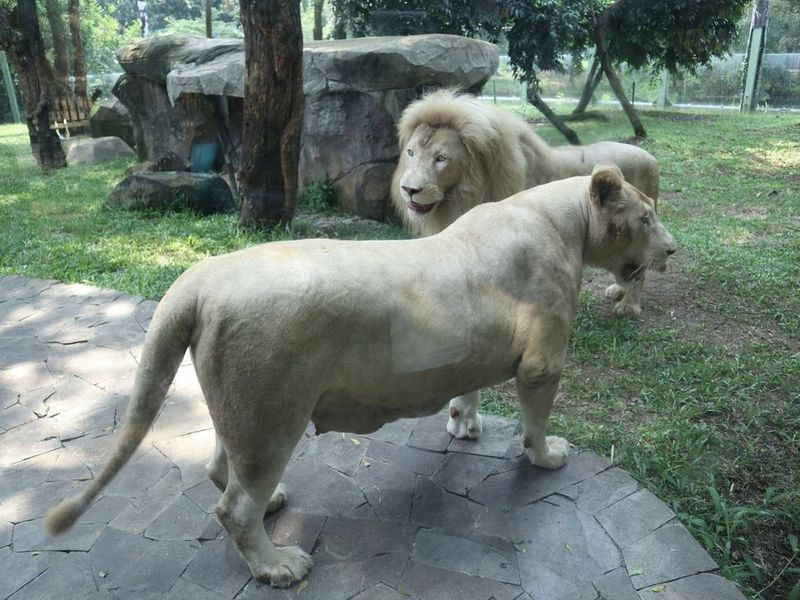
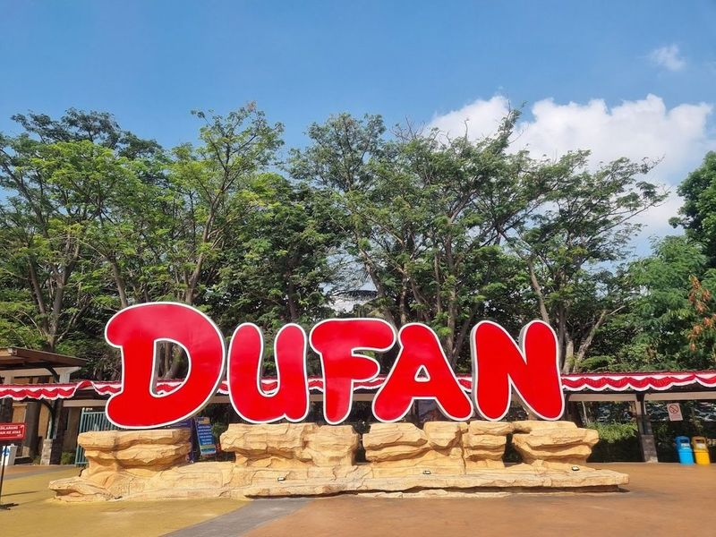
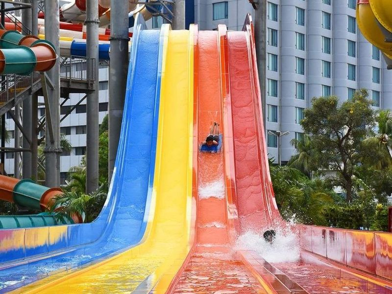
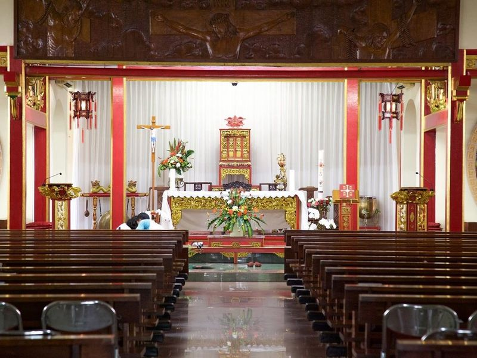
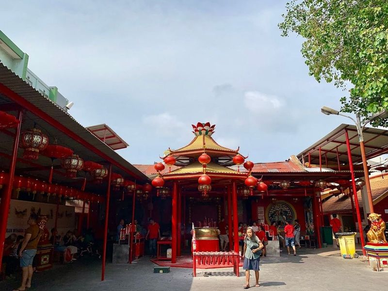
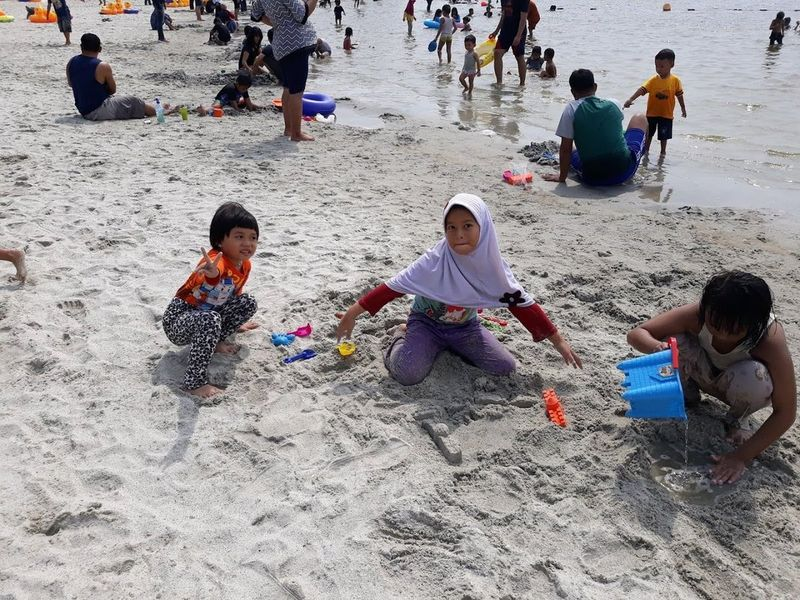
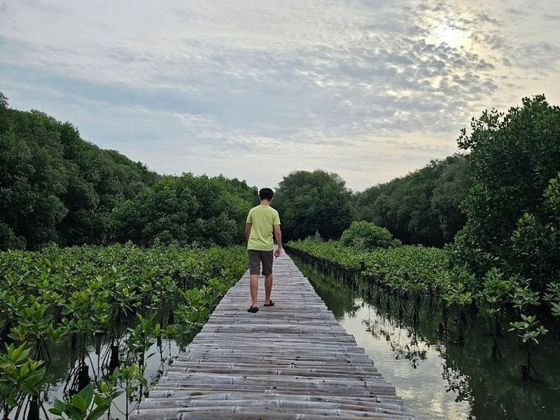

Explore Jakarta
A Brief History
Jakarta began as Sunda Kelapa, a harbour renamed Batavia by the Dutch East India Company in 1619. Colonial canals and warehouses in Kota gave way to independence-era expansion as capital of Indonesia in 1949. Monuments, mosques, and financial districts across Java's northwest coast record spice trade, Japanese occupation, and rapid post-Suharto urban growth in Southeast Asia's largest metropolis.
Attractions Map
Top Sights & Activities

Pondok Indah Mall 1
Pondok Indah Mall 1, affectionately referred to as PIM by locals, is a vibrant shopping haven nestled in the upscale Pondok Indah suburb of South Jakarta. This expansive complex features a delightful mix of retail shops ranging from high-end brands to budget-friendly options, ensuring that every shopper finds something special. Beyond shopping, PIM offers an array of entertainment choices including two cinemas and the exciting Wave Pondok Indah waterpark with its thrilling FlowRider.

Gelora Bung Karno Main Stadium
Gelora Bung Karno Main Stadium, located within the Senayan National Sports Center complex, is a versatile venue that hosts various sporting events and concerts. The stadium's surroundings offer a green open area suitable for sports and non-sports activities, making it a popular choice for fitness enthusiasts. It also serves as a go-to jogging track in Jakarta, attracting early morning and post-work crowds.

Plaza Senayan Mall
Plaza Senayan is a must-visit destination for anyone exploring Jakarta. This upscale mall, which opened its doors in 1996, stands out as one of the city's premier shopping venues. Nestled in the vibrant South Jakarta area near Gelora Bung Karno Stadium, it features an impressive array of high-end fashion brands and gourmet dining options that cater to discerning tastes.

Senayan City Mall
Senayan City is a contemporary shopping haven that has become synonymous with luxury retail in Jakarta since its inception in 2006. Spanning an impressive 1.2 million square feet, this multilevel mall boasts over 350 brand-name stores, making it a paradise for fashion enthusiasts and casual shoppers alike. Beyond just shopping, Senayan City offers a vibrant food market and diverse dining options that cater to every palate.

National Monument
Nestled in the heart of Merdeka Square, the National Monument, or Monas, stands as a striking obelisk dedicated to Indonesia's hard-fought independence from Dutch colonial rule. Towering at 132 meters, this structure was envisioned by Sukarno, Indonesia's first president, who drew inspiration from Paris’s Eiffel Tower. Construction kicked off in 1961 and culminated with its public opening in 1975.

National Library of the Republic of Indonesia
The National Library of the Republic of Indonesia is a paradise for book lovers, housing an extensive collection across 24 floors. With over 4 million titles including books, manuscripts, historical documents, and Braille books, it's a treasure trove of knowledge and culture. While some visitors find the library management in need of improvement to better cater to researchers' needs, others praise its completeness and recommend visiting early to obtain an ID card.

Mall Taman Anggrek
Mall Taman Anggrek, a gem in West Jakarta, is a shopping haven that promises an exhilarating experience for all. Spanning seven stories and over 360,000 square meters, this vibrant mall houses more than 400 stores featuring both local and international brands like UNIQLO and L'Occitane. Since its grand opening in August 1996, it has become a favorite destination for trendsetters seeking the latest fashion trends or unique accessories.

Taman Proklamator
Tugu Proklamasi, located in Taman Proklamasi park complex in Central Jakarta, Indonesia, is a monument that commemorates the struggle for Indonesia's independence. The black marble monument features statues of Soekarno and Hatta standing side by side with the Proclamation text carved between them. The park also offers recreational activities such as walking and jogging, along with amenities like a reflexology path, a Muslim praying area, and public toilets.

Taman Fatahillah
Taman Fatahillah, a vibrant city square in Jakarta, is a must-visit for anyone exploring the rich history and culture of Indonesia. Surrounded by colonial architecture and several fascinating museums like the Jakarta History Museum and Wayang Museum, this lively area buzzes with energy from street performances that captivate both locals and tourists alike. easily spend your day here renting bikes to explore or enjoying a meal at one of the charming cafes nearby.

Toko Merah
Toko Merah, also known as the Red Shop, is a historic building located near the Fatahillah Museum in Jakarta. Built in 1730, it served as the residence of Governor-General Gustaaf Willem Baron van Imhoff and several of his successors. The building's unique European-Chinese architectural style reflects its varied ownership history, which includes influential Dutch governors and a Chinese local.

Jembatan Kota Intan
Jembatan Kota Intan, also known as the Diamond City Bridge, is a piece of Dutch colonial architecture that dates back to the 1600s. This beautifully restored drawbridge spans the Grand Canal and serves as a remarkable reminder of Jakarta's rich history. Originally built to connect British and Dutch forts, it now stands as one of the city's most cherished landmarks. Although it no longer functions as a drawbridge, its charm remains intact with lanterns adorning its wooden structure.

Grand Indonesia
Grand Indonesia Mall is a modern, multi-level shopping destination located in Central Jakarta. With over 100 shops and more than 200 international restaurants and cafes, it offers a wide variety of options for visitors. The mall is quite large, with both east and west entrances connected by a sky bridge. It features well-known brands with impressive collections and occasional discounts.

Plaza Indonesia
Plaza Indonesia is a well-established 7-level shopping mall that offers a wide range of high-end boutiques, dining options, and even a supermarket. It has been a retail destination for over two decades and was the location of the first Starbucks in Indonesia. The mall caters to various needs including home furnishing, beauty products, fashion apparel, jewelry, and Indonesian souvenirs.

Selamat Datang Monument
The Selamat Datang Monument is an structure located within a fountain, featuring a man and woman making welcoming gestures. Situated in the heart of Jakarta, it is surrounded by upscale malls and luxurious 5-star hotels along the bustling Jalan Thamrin and Jalan Sudirman thoroughfares. This area offers various amenities for visitors, including dining options and accommodations.

Thamrin City
Thamrin City, also known as Thamcit, is a popular shopping destination in Tanah Abang Jakarta. This trade mall is renowned for its diverse range of retail clothing stores, featuring both local and international brands. Divided into four main zones, the mall offers a unique shopping experience with its Batik and Handloom zones showcasing traditional Indonesian textiles and prints.

Taman Suropati
Nestled in the heart of Jakarta's Menteng District, Suropati Park is a charming urban oasis that dates back to 1920. Originally designed as a village green surrounded by elegant mansions, this park has transformed into a beloved retreat for both locals and visitors seeking respite from the city's hustle and bustle.

Kota Kasablanka
Kota Kasablanka is a popular shopping destination in Jakarta, boasting a diverse range of international brands and dining options. The mall features a dedicated children's floor, a food court with various culinary choices, and an upper level known as the Food Zone offering everything from fine dining to fast food. Entertainment options include the renowned Cinema XXI showcasing national and international films.

Unit Pengelola Pusat Kesenian Jakarta Taman Ismail Mazuki
The TIM arts center in Jakarta is a major cultural complex with theatres, exhibition halls, and rehearsal spaces dedicated to Indonesian performing arts. It regularly hosts gamelan concerts, wayang kulit shadow plays, contemporary dance, and film screenings. Named for composer Ismail Marzuki, the campus anchors Cikini's creative quarter and draws students, families, and tourists seeking accessible introductions to Jakarta's live culture.

Tebet Eco Park
Tebet Eco Park, located in the Tebet neighborhood of Jakarta, is a newly revitalized 7.3-hectare green space that offers a range of recreational and educational facilities. The park features jogging paths, a children's playground, and weekend food kiosks. It also includes a plant nursery for gardening enthusiasts and serves as a flood retention pond during the rainy season.

Jakarta Cathedral
The Church of Our Lady of the Assumption is a example of Neo-Gothic architecture, established in 1901. With its three impressive spires and beautifully crafted altars, this Roman Catholic church stands out amidst Jakarta's vibrant landscape. Located near significant landmarks like the Istiqlal Mosque and Jakarta Cathedral, it offers visitors a unique glimpse into Indonesia's diverse cultural tapestry.

Lapangan Banteng
Lapangan Banteng is a historic square in central Jakarta beside the Istiqlal Mosque and Jakarta Cathedral, laid out during the Dutch colonial era as Waterloo Square. Shaded lawns, a central monument, and paths used by joggers and families make it a calm pause between government offices and religious landmarks in the old Kota district.

Istiqlal Mosque
Nestled in the heart of Jakarta, Istiqlal Mosque stands as a magnificent testament to contemporary architecture and is recognized as the largest mosque in Southeast Asia. Completed in 1978, this grand structure can accommodate up to 200,000 worshippers across its four levels. Its marble façade adorned with aluminum details reflects both modern design and cultural significance.

Pacific Place Mall
Nestled in the vibrant Sudirman Central Business District, Pacific Place Mall is a must-visit destination for those seeking an upscale shopping experience. This expansive, nautical-themed mall boasts a array of both mainstream and luxury shops, featuring renowned international brands like Dior, Hermes, and Cartier. The elegant interiors create a serene atmosphere perfect for leisurely browsing. Families will also find joy here with dedicated kids' play areas that include fun rides.

Kidzania Jakarta
Kidzania Jakarta is a unique edutainment center designed for children aged 2 to 16 and their parents. It's a miniature city with streets, buildings, and various vehicles where kids can role-play as adults in over 100 different professions. They can learn about being doctors, pilots, construction workers, detectives, archaeologists, F1 drivers, and more while earning KidZos - the official currency. Parents can watch their kids play or relax in the parents lounge.

Jakarta History Museum
Nestled in the heart of Jakarta's Old Town, the Jakarta History Museum is a captivating destination for history enthusiasts. Housed in an elegant 18th-century building that once served as Batavia's city hall, this museum showcases a rich tapestry of artifacts that narrate the city's evolution from its prehistoric roots to its colonial past and eventual independence in 1945.

Glodok Chinatown Market
Glodok Chinatown Market is a covered market in Jakarta's Chinatown, offering a wide range of local produce, fashion items, and electronic goods. The area provides an authentic Chinese shopping experience with various products such as Chinese medicine and affordable electronics. Visitors can explore unique remedies like roots and insects at the stores. Additionally, Glodok is known for its rich cultural heritage, featuring one of the oldest Buddhist temples in Jakarta, Vihara Dharma Raya.

Sea World Ancol
Sea World Ancol, also known as Sea World Jakarta, is a modern aquarium located within the Ancol Dreamland in Jakarta. It offers an educational and entertaining experience for visitors interested in marine life. The aquarium houses a diverse collection of over 7,300 marine species, including sharks, stingrays, starfishes, and various fish and reptile species. Visitors can enjoy feeding shows and have direct interactions with marine animals at the Touch Pool.

Samudra Ancol
Ocean Dream Samudra - Ancol, formerly known as Gelanggang Samudra, is an aquatic-themed park located in Taman Impian Jaya Ancol. It serves as a conservation site for marine animals, particularly dolphins. The park offers various attractions and shows such as underwater theaters, fish tanks, and performances featuring sea animals like dolphins and sea lions. Visitors can also enjoy educational films with 4D effects and water stuntman shows.

Dufan Ancol
Dufan Ancol, short for Dunia Fantasi Ancol, is a sprawling amusement park located within the Ancol Dreamland complex in North Jakarta. Since its establishment in 1985, Dufan has been a go-to destination for locals and tourists alike. It offers an array of attractions including roller coasters, interactive rides, themed zones, and entertaining shows. This Indonesian version of Disney World provides fun and adventure for visitors of all ages.

Faunaland Ancol
Ancol is a large recreation park in Indonesia that features an area of 5 hectares with different animal attractions, including Faunaland. The zoo has lions, donkeys, giant tortoises, and a bird show. There is also a petting zone where visitors can interact with some of the animals. There are not as many animals as other zoos, but it's one of the only zoos in Indonesia to have 'Meerkats' on display.

Allianz Eco Park
Allianz Eco Park, formerly known as Ocean Ecopark, is a vibrant outdoor adventure destination nestled in the heart of Jakarta's Ancol Taman Impian. Spanning over 30 hectares, this expansive park offers a delightful escape from the city's hustle and bustle. Visitors can engage in various activities such as archery, zip-lining, paintballing, and boating while immersing themselves in nature.

Atlantis Water Adventures Ancol
Located in the Ancol dreamland area of Jakarta, Atlantis Water Adventures Ancol is a sprawling water park spanning over five hectares. The park is themed around the mythical underwater world of Atlantis and offers a range of attractions for visitors of all ages. From a wave pool and floating playground to various pools, water slides, and children's areas, there's no shortage of aquatic fun to be had.

Church of Santa Maria de Fatima
The Church of Santa Maria de Fatima in Jakarta is a unique architectural gem that showcases a blend of southern Chinese design, particularly the Fukien style, and Catholic elements. Originally a house, it was transformed into a Catholic church in the 1950s and has since been declared a cultural heritage site. Located in Jakarta's Chinatown area, the church stands out with its vibrant red and yellow hues and grand lion statues at the entrance.

Dharma Bakti Temple
Dharma Bhakti Temple, also known as Vihara Dharma Bhakti, is Jakarta's oldest temple, dating back to the mid-17th century. It was originally built to honor the goddess of mercy, Kuan Yin. The temple features traditional Chinese architecture and religious art and serves as a place of worship for Buddhists, Confucians, and Taoists. Despite being razed and rebuilt in its first century, it continues to be an active place of worship today.

Ancol beach
Ancol Beach, part of the Ancol Dreamland Park in Indonesia, is a bustling sandy beach where children can play in the calm waters under the watchful eye of lifeguards. The park offers a wide range of facilities including theme parks, golf courses, hotels, and an underwater aquarium called Sea World. Additionally, there are various fishing spots near Marina Pier and Bende Pier as well as along the beach.

Mangrove Ecotourism Centre PIK
The Mangrove Ecotourism Centre PIK, located in the Pantai Indah Kapuk area of North Jakarta, offers a unique staycation experience with its beautiful natural scenery and affordable bungalow accommodations. This recreational area features mangrove ecosystems that provide a habitat for various water birds and serves as a conservation site. Visitors can enjoy walks through the mangrove forest, observe wild long-tailed macaques and diverse bird species, and even go fishing in the ponds.